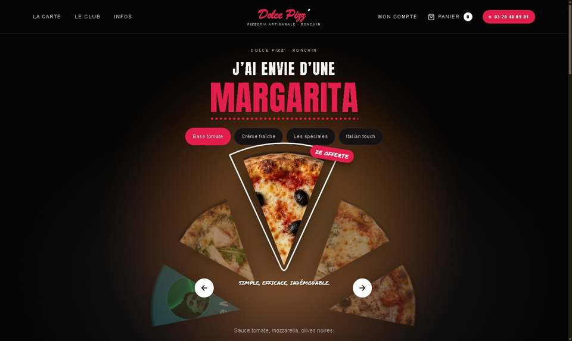
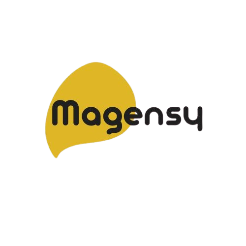

Dolce Pizz’
Une expérience de commande pour une pizzeria, avec carte interactive et parcours responsive. Une façon de relier interface, logique métier et expérience client.
React · TypeScript · Tailwind CSS · Cloudflare
Alternance · développement web
Je suis Otmane, développeur web et étudiant en Master Ingénierie du Web à Lille. Je recherche une alternance pour construire des projets utiles, de l’interface à l’API.
J’aime comprendre un besoin, puis le traduire en une application claire et utilisable. Mon parcours m’amène à travailler sur les interfaces, les API, les données et les règles métier.
02 / Compétences
React · TypeScript · Next.js · React Native · HTML · CSS
Node.js · Express · Python · API REST · Prisma · PostgreSQL
Git · GitHub Actions · Tests · Docker · Linux
03 / Projets sélectionnés
Une sélection de projets qui illustre mon travail sur les interfaces, les applications métier et les outils de développement.

Une expérience de commande pour une pizzeria, avec carte interactive et parcours responsive. Une façon de relier interface, logique métier et expérience client.
React · TypeScript · Tailwind CSS · Cloudflare
Contribution à une application interne pour organiser les rendez-vous d’un centre de kinésithérapie. Un projet qui relie les besoins de l’équipe à une interface et une API.
React · Express · Prisma · PostgreSQL
Application interne · pas de données patients en démonstration
$ guardian scan /projet
$ guardian references /projet
$ guardian plan /projet
Analyse locale · revue humaine
Un outil local d’analyse de dépôts pour inventorier les ressources et préparer des modifications de nettoyage vérifiables, avec revue humaine.
TypeScript · Node.js · Git · Tests
Un prototype de réception d’événements signés : vérification HMAC et simulation des nouvelles tentatives. Il ne traite pas de paiements réels.
TypeScript · Express · HMAC-SHA256
Une application pour consulter la météo, rechercher une ville et retrouver ses favoris enregistrés sur l’appareil.
React Native · Expo · TypeScript · Open-Meteo

Agence web & visibilité digitaleUn site de présentation d’entreprise construit avec Next.js, pensé pour un affichage adapté aux différents écrans.
Next.js · TypeScript · Tailwind CSS
04 / Contact
Vous cherchez un développeur web en alternance ? Je serais ravi d’échanger sur votre équipe et vos projets.
M’écrire